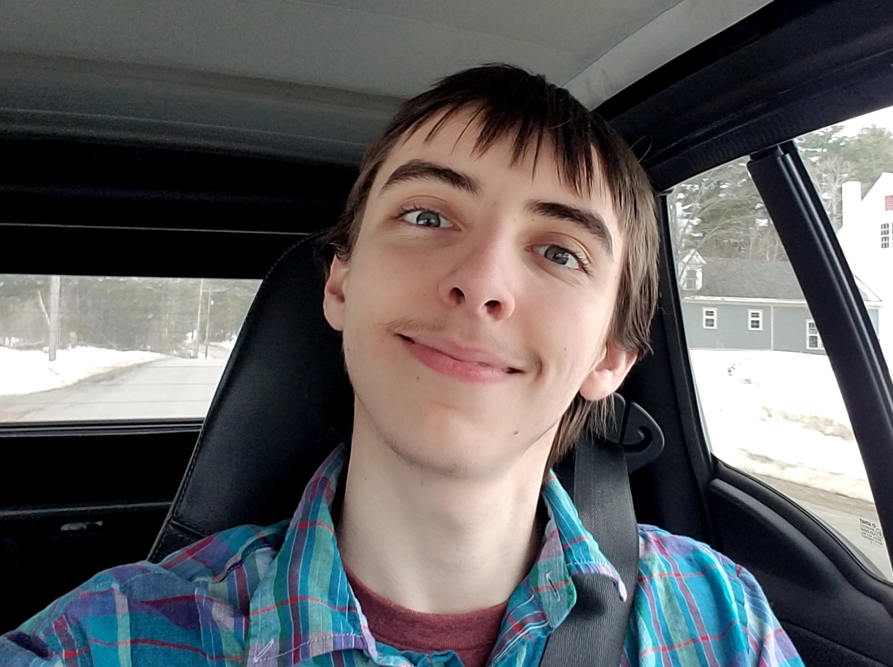

About Me
"For fortune and glory, kid. For fortune and glory..."
I am continually fascinated by the use of abstraction in computing to achieve some of
the most impressive feats in human history.
I have been a video game junky since I could walk and talk. For better and for worse, I
have practically been raised off of games from the 1980's to present day. There
is something I enjoy about having a fixed set of rules to work by in order to achieve
various tasks. It makes you think in a different way to how you would think in real life.
You start to understand and internalize the quirks of every game's engine to
best realize your goals within the game.
I have always been curious about how these miraculous devices could function. There was
something so captivating about taking a plastic game console cartridge, slotting
it into the system, and having something like Yoshi's Island appear on your television
screen ready to play! This didn't work if you tried stuffing something like a
peanut-butter and jelly sandwich into the cartridge slot (I have tested this, much
to the dismay of my parents), so what gives? What gave these cartridges their power
to control the beast that lay inside of the console's outer shell? And how was this machine
able to tell which game to play?
Unfortunately, I didn't take this curiosity past shrugging and continuing my insane
gaming binges. I was curious, but early on in my life I didn't realize that I could mess
around with the world around me and learn using the resources available to me.
It's hard looking back and trying to explain why I couldn't become passionate about
anything early on. It's like I didn't know that I could learn. Imagine living like that?!
I can blame the failings of the modern education system and events that happened early in my life,
however at the end of the day everyone has their demons and it's inconsiderate to think that
even you, the reader, haven't been through some terrible things to get to where you are today.
It is cliché to say, however it really is how you carry yourself after these events which defines
you as a person.

So let's skip past my early life and jump to college. I originally started at
'Southern New Hampshire University' (SNHU) through their online program, however, in a defining
moment which would have strong impacts towards my future, I decided I wanted to transfer to
an in-person campus instead of getting my degree online. I felt a strong detatchment from the rest of
humanity and I knew the path I was currently following wasn't what I wanted.
I also felt like the online learning environment wasn't for me.
If I was going to be paying for some sort of education, I should do it right and
fully commit to the education I wanted. I decided to change my life trajectory
and transfer to the 'University of New Hampshire' (UNH). It is funny, but this feels like
one of the first real decisions I have ever made in my life. I look back now and it seems
like I was always taking the path of least resistance, kind of plodding along.
It's all so strange looking back trying to make sense of the past.
I didn't know what college was going to be like. I felt charismatic and my literacy
felt above average for my age. I was armed with a lot of essoteric knowledge from past
experience and research, but I was also very self aware and not confident in myself.
I felt very weak in many areas people wouldn't normally feel weak in, such as: finance,
math, structured lifestyle, etc.. I felt like I needed to go through some sort of crucible
to prove to myself that I was worthy. I only had sneaking suspicions that I
had what it took, but I didn't know who I was or what I was capable of doing.
College seemed like a safe place to find out how far I could push myself.
I only realized going into college that I could actually aspire towards creating
things like videogames. As I explored 'software development' as a possible field
of study, I came to realize that this ability reached past videogames into being
able to code ANYTHING* you could imagine! The possibilities where endless!
I thought this power was reserved for the savant engineers of the ancient world,
being something unattainable to mere mortals. I just never made the connection that
software was a viable career option, and at the time I didn't really understand what
software development even meant or how it all worked. I decided to go with my gut feeling and
started studying for a degree in Computer Science. There was something about software development that
tickled the same parts of my brain that videogames did. It felt like you were working
within a game, you are internalizing the quirks of software development and computer architecture
to design whatever you (or your employer) fancies. It was fantastic! It made me feel like I was
actually in control of something.
After a couple years in college, I decided that I wanted to work harder than I already was
and get a second job (I was already working as a librarian at this time).
A good option seemed to be UNH's InterOperability Laboratory. I applied to the IOL,
was interviewed, and ended up getting hired as a part of the lab's Datacenter team!
I absolutely fell in love with the IOL and many of the people that worked there. I never felt
so happy working as I did at 'the lab', as its inhabitants affectionately called it.
I was simply intoxicated by the learning and hands-on experience available when I
joined. Since I was hired during the Covid-19 quarantine at a time when everyone at work
was remote, I had the perfect environment to start working in-person with just me and my
bosses. I felt free to ask questions, tinker with machines around the office, and spend
time pouring over specifications and test procedures for NVMe PCIe SSDs. I really enjoy
working in-person as possible, so it felt like the perfect storm coming into my first tech
related job. I felt like what I was learning on the job was infinitely more valuable than
from my formal education, so I would spend more and more time at the lab. This extended
into weekends, holidays, etc.. I was having the time of my life and working harder than I
have ever worked in my life.
Long story cut short, I worked flat-out for 2 years straight while attending college full-time,
but events in my personal life during the last few months of my time at the lab started
taking their toll on my mental and physical health and I felt like I didn't have any support. At
the time I had worked myself up to be a 'silver bullet' employee at the lab, though I was tempered
extremely by my humility and my general glee at working on solutions to problems. I was always
not confident in myself or my ability, but I like to think my hard work and sheer effort on
problems got our department and I through a lot of difficult times.
I realized that nobody I worked with cared about me or anything other than themselves, and that
was a crushing realization to me that I couldn't quite recover from. I observed the people around me
and things became too toxic. The work environment deteriorated into
something I just didn't want to be a part of. I also came under extremely heavy burnout from
constant 80 hour weeks (not counting college) for 6 months to a year straight. I made the unfortunate decision to ignore
myself and continue my work at break-neck pace for another 6 months before reaching my breaking
limit with the job and the people there. I decided to quit and take some time to recouperate
and get back in touch with many of the things I had sacrificed for the job, and the
people / pets I had put by the wayside during this time.
My time at the IOL was unbelievably impactful to me. I learned so much I wouldn't have
been able to through UNH normally. I built my knowledge of many foundational skills and got
hands-on experience working with others I consider way more capable and intelligent than myself.
It was an honor, and even though my experience was soured by the end of my time with the IOL,
it was ultimately an excellent influence on me. I was able to develop and refine my work ethic
and character in an accepting environment full of opportunity and generosity. I found that it
was okay to not know anything, or to be confused, so long as you were asking questions and moving
towards understanding every day. In this way, you can become reliable and knowledgable
within any field given time and continual effort.
I am able to see through this mess of negativity and recognize that the IOL's vision and general workmanship
was a cause worth fighting for and worth 2 years of complete dedication from me. I had found my limit and I had
proven to myself that I was able to learn many things if I could put my mind to them. I also
found that I was capable of spending long hours working towards goals without losing hope
or determination. I have also found a passion in computer programming and computation in
general, which I never knew I could have about anything in this world before!
Coming into college, I felt like I had been reborn! I picked up many hobbies and skills I always
wanted to try but never felt like I was worthy of, or could excel in. I took up archery, roller-skating,
Oil painting (plein air during college, subject painting coming out of college), miniature painting,
playing guitar, beekeeping, electrical engineering hobby work. I also found coding and software design to be fun
even after coding all day at work! I really enjoy having a bunch of pokers in the fire and
juggling different projects all the time!
After the IOL, there isn't too much to update you on which can't be seen through the projects I have
in my 'projects' section. I am working on a few projects semi-secretly which I am
excited to be able to present when they become presentable! As was alluded to above,
I decided to spend some time reconnecting with myself. I have spent
my time reading, writing, coding, traveling, playing music, painting, and generally exploring
the world around me. I have put a big focus on helping family and trying to spend as much
time with them as I can. I have a few plans for the future, one of which is to continue onward
towards a Master's in Computer Science at UNH!